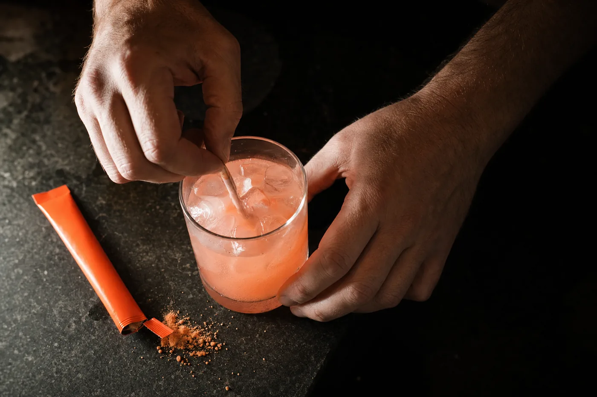

Burn fat naturally
Supports fat burning, with no stimulant in it.
Free 3 day trial · We mail it to you
IGNYT is a powdered metabolic booster from ORYGN. One stick, 8oz of water, under a minute. It comes out light and citrusy, closer to a cold drink than a supplement. Give us an address and we'll send you three days of it.
We won't ask you for a card, and there's nothing to cancel.

Printed on the pouch
There's no stimulant in it. IGNYT works on the signaling your body already runs on. Here's what ORYGN builds it to support.
Supports fat burning, with no stimulant in it.
Lose the fat and keep what you built in the gym.
Less of the constant thinking about food.
Even energy, and no crash at three o'clock.
Steadier blood sugar, from the same signaling.
Three days of IGNYT, free, in the mail.
Claim free sample nowWho is drinking it
Get your free sample. Just tell us where to send it.
Claim free sample nowWhy three pathways
Most products in this category work on one receptor. IGNYT's peptides work on three.
Appetite and fullness. The one most people have heard of.
The gut lining, and how well you absorb what you eat.
Insulin and fat handling. It works alongside GLP-1.
The sample is free. We don't ask for a card.
Claim free sample nowThe research behind it
Get your free sample and decide for yourself.
Claim free sample nowTaste
Most people quit a supplement because they got tired of drinking it. IGNYT is one stick into 8oz of water. It comes out light and citrusy, and it's better over ice. No shaker, no scoop.
Three days is enough to know whether you'd keep drinking it.
Single serve. Nothing to measure.
Cold water and ice is how most people take it.
About a minute, once a day, for three days.

One form. Then we mail it.
Claim free sample nowBefore you ask
Yes. Three sticks, mailed to you, at no cost. We don't ask for a card.
It's a physical product and we have to mail it to you. Your address is used for that and nothing else.
We confirm your address with you first, then it goes in the mail. Give it a few days from there.
Nothing. Order more if you want it. If not, that's the end of it.
The form takes about a minute.
Claim free sample nowFree 3 day trial
Fill in your name and where to send it. Three days later you'll know if you want more.
One trial per household while supplies last. These statements have not been evaluated by the Food and Drug Administration. This product is not intended to diagnose, treat, cure or prevent any disease.